58 slides. Text and pictures from the presentation are shown below.
-
Slide 1
Slide 1
Subject Mathematics Grade 2 year2 Term 2 -
Slide 2
LESSON PLAN CONTENT
Week2 Numbers,operations and relationships. Week3 Numbers,operations and relationships. Week4 Assessmentweek Week5 Spaceand shape -
Slide 3
LESSON PLAN CONTENT
Week6 Space and shape Week7 Assessment week Week8 Datahandling Week9 - Measurement - Patterns -
Slide 4
LESSON PLAN CONTENT
Week10 Assessment week -
Slide 5
LESSONOBJECTIVES
To use mathematical knowledge and skills learnt in the classroom and to apply them in the realworld.
Toequip the learners, irrespective of their socio background, race, gender, physical ability or intellectual ability, with the knowledge, skills and values necessary forself-fulfilmentand meaningful participation in the society as a citizen of the free country.
Facilitatingthe transition of learners from educational institution to work in the community e.g. Community Development Worker (CDW) or a sheltered workplace.
It helps the teacher to be able to: create a leaner’s profile of competences - the profile will bridge the gap between the home and the school; identify what the learner knows, can do and demonstrate in the teaching and learningsituation.
work effectively as individuals in/or a member of ateam.
Communicate effectively or by using Augmentative Alternative Communication (AAC) and other communicative devices (Sign language, Braille, etc.
-
Slide 6
Assessment Goals
Numbers, operations and relationships. -Count forward and backwards up to 30 from a given number. Identify number symbols and number names. Numbersoperations and relation ships - Recognize and identify the South African coins. Addition and subtraction of money. Spaceand shape -Understand the position of one object in relation to another. Spaceand shape - Recognize and name 3D objects in the classroom and in pictures. -
Slide 7
Assessment Goals
Datahandling - Sort out everyday concrete objects. Measurement Time - Talk about passing of time, sequence of events [start to use concepts like today and tomorrow]. Patterns Copy and extend simple patterns using body percussions [ clapping, stamping]. Make simple patterns using 2D geometric shapes. -
Slide 8
Numbers, operations and relationships.
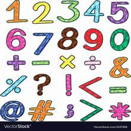
-
Slide 9
Group 1Color the following numbers from 1-20.
-
Slide 10
Slide 10
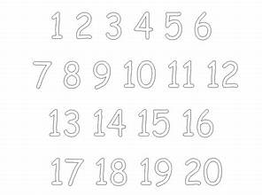
-
Slide 11
Group 2Count while pointing the numbers from1-40 using the following chart.
-
Slide 12
Slide 12
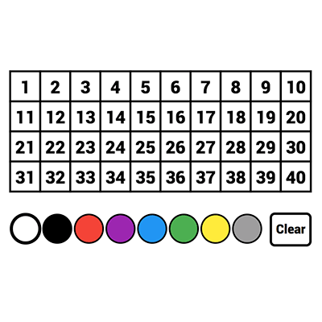
-
Slide 13
Group 3
-
Slide 14
Slide 14
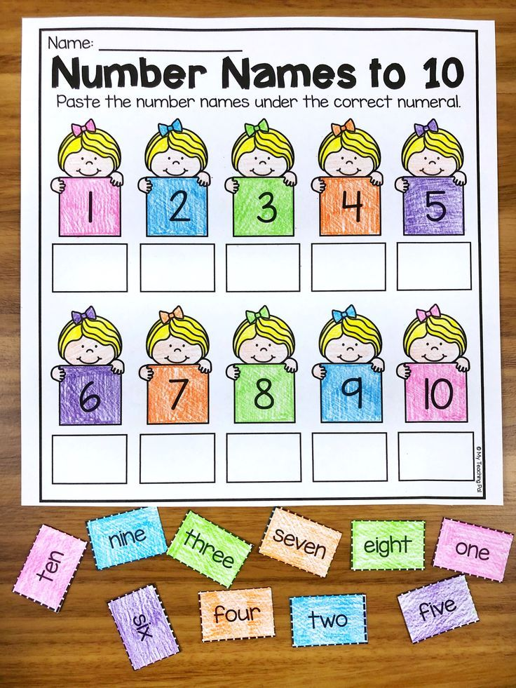
-
Slide 15
South African coins

-
Slide 16
Group 1
-
Slide 17
Activity:The teacher will come with coins in the classroom and ask learners what coins do they see.
-
Slide 18
Group 2
-
Slide 19
Slide 19
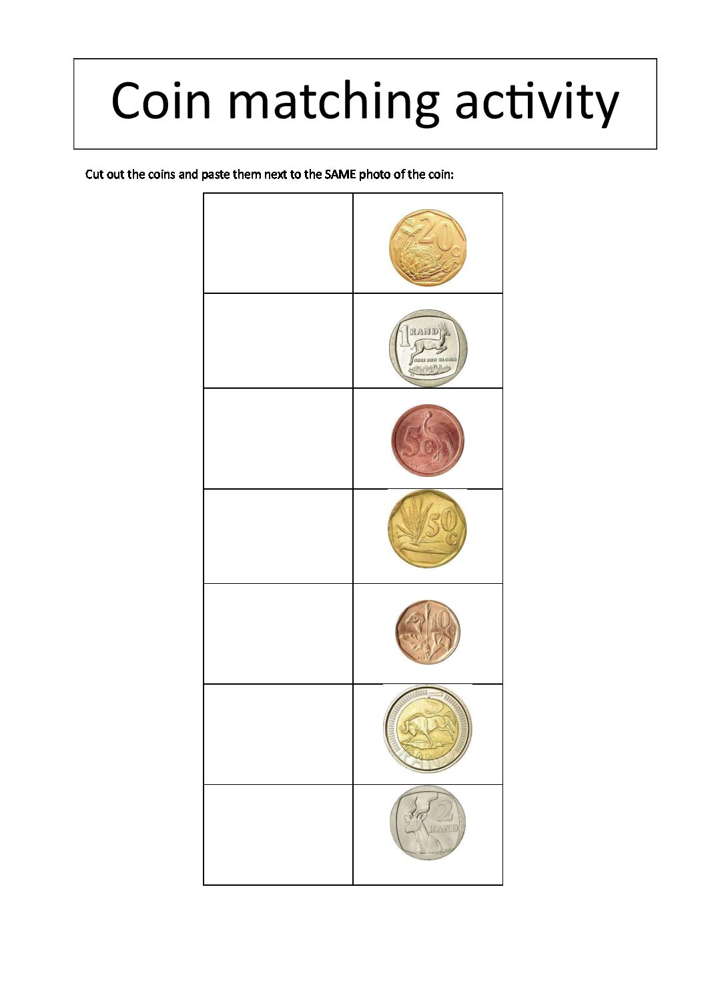
-
Slide 20
Group 3
-
Slide 21
Slide 21
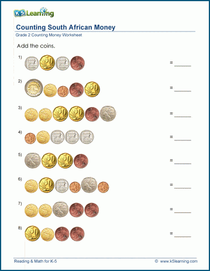
-
Slide 22
SPACE AND SHAPE

-
Slide 23
POSITIONS
-
Slide 24
Group 1
-
Slide 25
Activity:The teacher will use objects in the classroom like chairs, desks, chalkboard, door etc. and demonstrate to learners about different positions that one object can display amongst other objects then ask learners to also demonstrate those positions.
-
Slide 26
Group 2
-
Slide 27
Slide 27
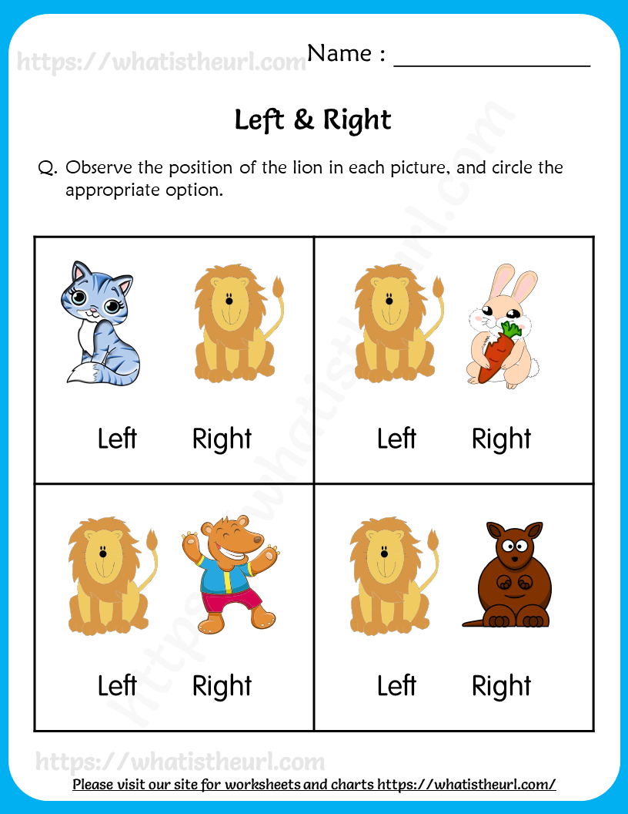
-
Slide 28
Group 3
-
Slide 29
Slide 29
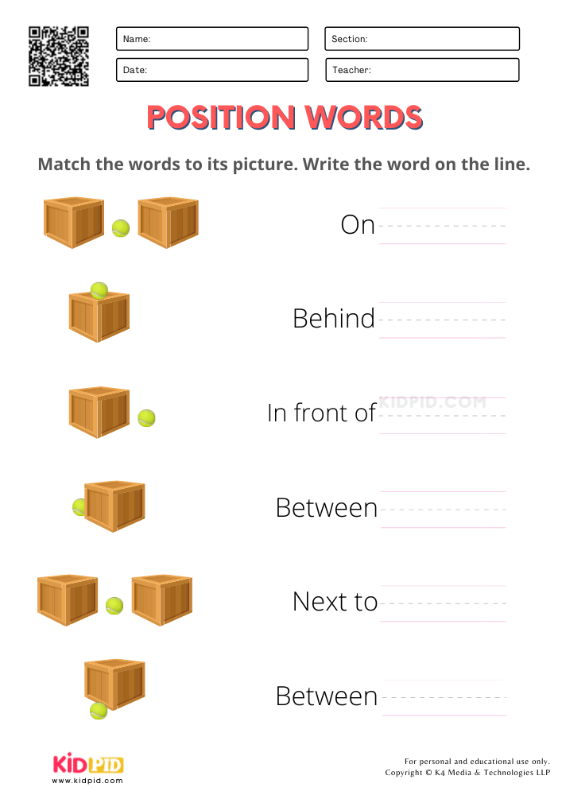
-
Slide 30
3D OBJECTS

-
Slide 31
GROUP 1Colorthe 3D shapes.
-
Slide 32
Slide 32
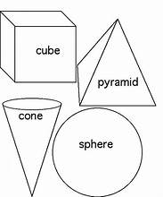
Speaker notes
32
-
Slide 33
Group 2
-
Slide 34
Activity:Name the 3D objects that you can see around the classroom.
-
Slide 35
Group 3
-
Slide 36
Slide 36
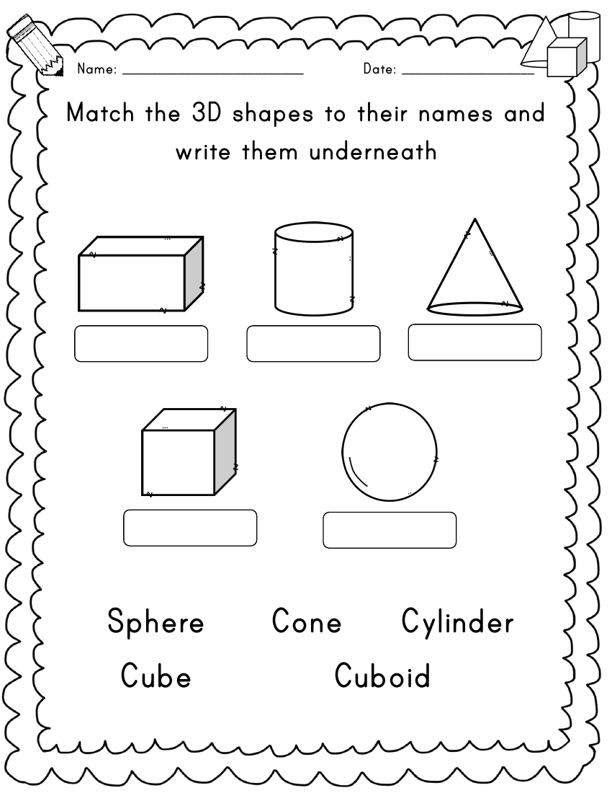
-
Slide 37
DATA HANDLING

-
Slide 38
Group 1
-
Slide 39
Activity:Learners will be given counters with different color and they will have to sort and arrange those counters according to their colors.
-
Slide 40
Group 2
-
Slide 41
Slide 41
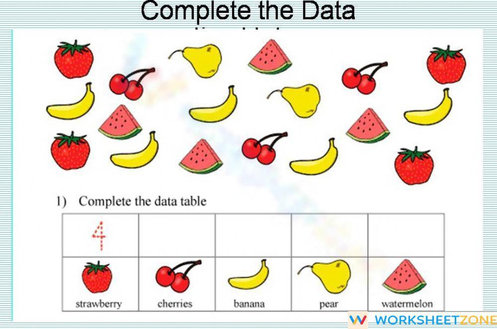
-
Slide 42
Group 3
-
Slide 43
Slide 43
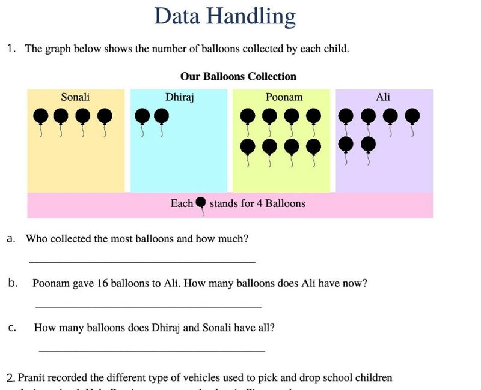
-
Slide 44
MEASUREMENTS
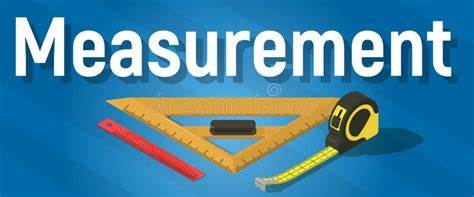
-
Slide 45
Group 1
-
Slide 46
Activity:1. Tell us about the things you did yesterday at home.2. What are you going to do today at school with your friends?3. What are you going to do tomorrow after school?
-
Slide 47
Group 2
-
Slide 48
Activity:1. Today is Friday, what day is tomorrow?2. Today is Monday, what day was yesterday?3. Yesterday was Wednesday, what day is today?
-
Slide 49
Group 3
-
Slide 50
Slide 50
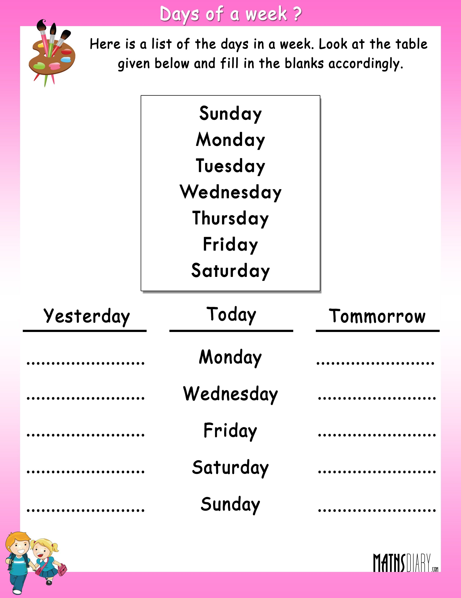
-
Slide 51
PATTERNS
-
Slide 52
Group 1
-
Slide 53
Slide 53
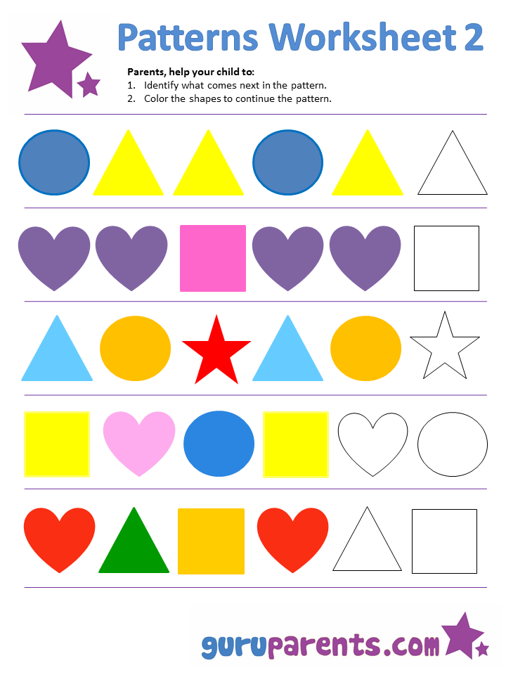
-
Slide 54
Group 2Complete the following pattern by drawing the picture in the box.
-
Slide 55
Slide 55
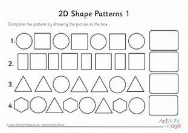
-
Slide 56
Group 3
-
Slide 57
Slide 57
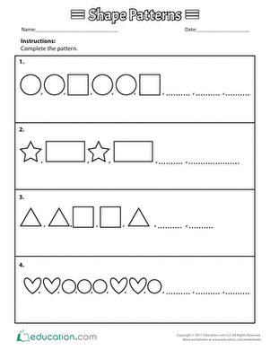
-
Slide 58
REFERENCES
https://tse1.mm.bing.net/th?id=OIP.xGKS3Rl7LV-kS8v9qqcRQwHaFg&pid=Api&P=0&h=220
https://tse2.mm.bing.net/th?id=OIP.pmj2R0guqGQdM8XR_mEhbAAAAA&pid=Api&P=0&h=220
https://whatistheurl.com/wp-content/uploads/2020/11/identifying-left-and-right-position-worksheet-3.png
https://www.kidpid.com/wp-content/uploads/2021/11/position-words-practice-worksheets-for-kindergarten-1.png
https://i.pinimg.com/originals/d1/da/a9/d1daa90e07d2810f087a5482d18f2b0b.png
https://storage.googleapis.com/worksheetzone/image/6221ff931becbd4e04bda302/data-handling-w1000-h662-preview-0.jpg
https://witknowlearn.com/cdn/images/thumbnail/handling-data-worksheet-for-grade-3-0-2020-11-07-061035.jpg
http://www.mathsdiary.com/wp-content/uploads/2015/08/days-of-a-week-worksheet-3.jpg
https://i.pinimg.com/originals/0c/89/e9/0c89e978bca96b271655ff48f801a3df.gif